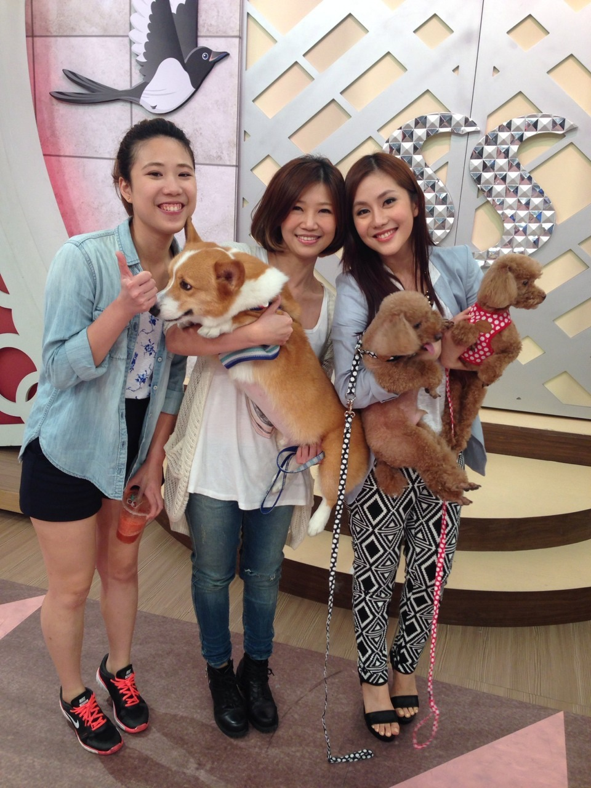
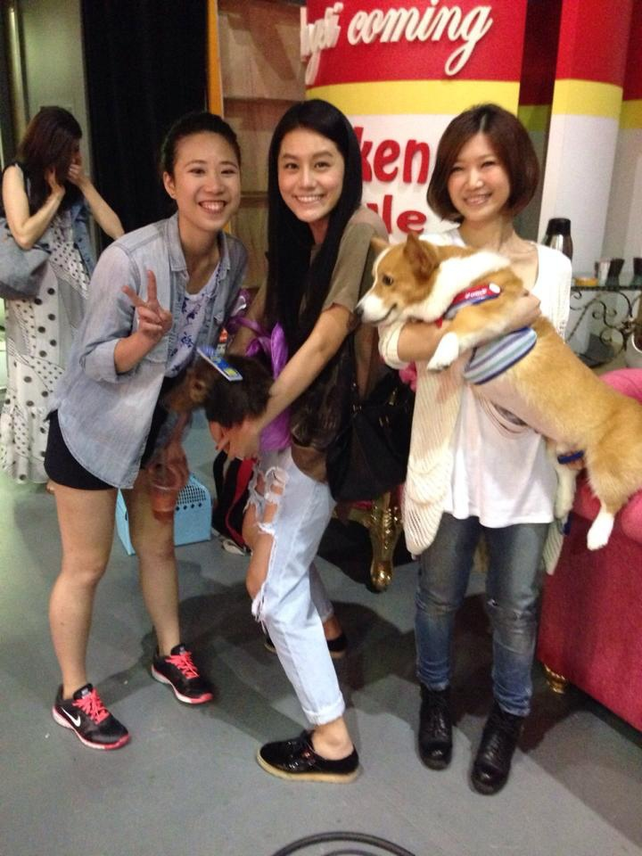
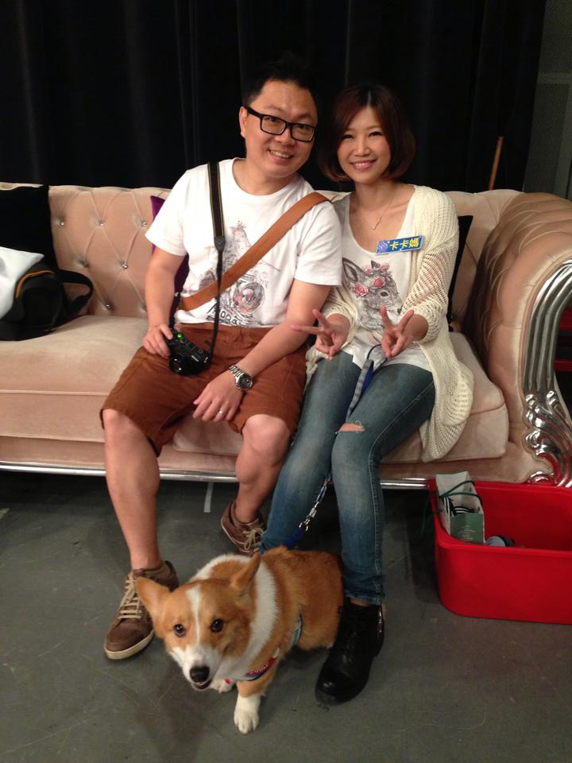
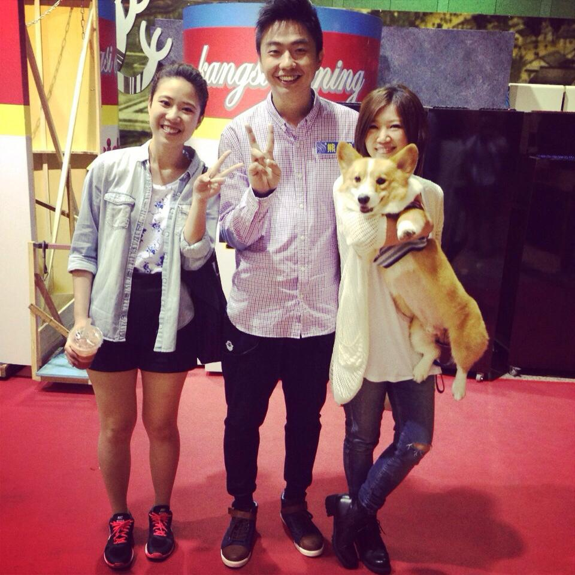

卡卡電視處女秀 SS小燕之夜 5/21已經播出嘍！
卡卡電視處女秀 SS小燕之夜 5/21已經播出嘍！ 
想不到今年初跟彭于晏拍廣告後，竟然還有機會可以上台灣的電視節目
 卡卡與彭于晏 谷利多廣告拍攝花絮（附連結）
卡卡與彭于晏 谷利多廣告拍攝花絮（附連結）
這小子星運（？）真不錯！2014算是走中年老運的一種 XD
謝謝熊爸推薦，卡卡練了六年的抓螞蟻功（？）終於有出頭的一天惹！（笑倒）
熊爸也是看完卡卡抓螞蟻，一試成主顧（？）的朋友 哈哈哈哈

還沒看過節目內容的，摩卡拔很貼的截取了卡卡那段精華（很敢講XD）
不好意思，畢竟會一直repeat也是因為是自己的兒子可愛嘛～
連之前拍的收玩具影片都被放到節目播出了（好險摩卡拔內褲沒有亂丟地上？XD）
 文章請點-->【生活小幫手】 卡卡自己的玩具自己收
文章請點-->【生活小幫手】 卡卡自己的玩具自己收
想看完整版的 請點--> SS小燕之夜 毛寶貝真的會跟主人一個樣嗎？
只能說好在卡卡先出場，不然Ruby實在是太厲害了！在他後面表演壓力很大吶 XDXD
＝＝＝＝＝＝＝＝＝＝5/13小燕之夜 錄影側拍＝＝＝＝＝＝＝
錄影中，跟小燕姐一起看素人毛小孩的片段
我一直以為播出的素人毛小孩的畫面是後製的，沒想到是錄影現場直接播出

看完立刻回到現場，當天完全沒有Re稿這件事.....直接上直接來（抖）

許摩卡好厲害！一發現小燕姐身上零食就坐著不動了 哈哈哈
怪了！這傢伙平常在外面沒有很愛吃der

播出畫面覺得攝影師的鏡頭也太轉太低了吧！！哈哈哈～卡卡那有那麼矮啦！！

表演收玩具
熊爸之前看過卡卡在家收玩具的樣子，準確呀！（驚)--> 他一定不相信是我教出來的！！XD
但這是在家啊～拿錯了就錯了沒差，反正玩具收乾淨就好！哈哈
從沒想過這當才藝要上節目秀，只好精心挑了幾個比較不會出搥的玩具出場 XD

大家都知道，卡卡在家裡要收完全部的玩具才可以得到一顆“鼻屎大“的零食！哈
這小子精的很，知道有吃的現場收一個立刻去討賞
本來為了要讓他專心，老木我連零食都沒拿出來！哈哈哈

這小子從頭到尾緊跟著小燕姐，你老木我都沒鏡頭了啦！！！！屎孩子～
你老木我長這麼大也是第一次上電視說 XD

抓螞蟻這招六年來不知道已擄獲了多少人的心....... 

（還有人用這招確認他是不是卡卡，噗！笑翻）
這招算是被玩壞了也算沒壞
以前他是真的會很認真看地上的螞蟻再抓抓，現在是指地上就會抓了.....（被玩壞掉惹啦！）
但六年了，這小子怎麼玩不膩呀！！！隨時cue隨時都可來上一段（所以也算沒壞？）
我們在家是不跟他玩這個的
但他是真的會去櫃子邊邊角角找螞蟻的 哈哈哈
熊爸會發現就是因為這傢伙上課上到一半跑去櫃子邊邊定格（老師整個笑翻）

卡卡抓的太high，引發王于婕的兩隻毛寶貝衝下來看！XD

超厲害的Ruby跟Ruby拔拔

卡卡＆米可白
卡卡的肚子被我剃的好乾淨，光溜溜der XD

卡卡＆王宇婕

卡卡＆阿咪老師

卡卡＆小蠻

去錄影前，我跟摩卡拔在互推誰要負責帶卡卡上去，因為我怕上鏡頭會痴肥！XD
結果他一句：卡卡又不會聽我的，硬是把我往前推了！！
這傢伙，從今天起我要特訓你們父子倆的互動～給我覺悟吧！（指）

熊爸的招牌笑容！謝謝老師讓卡卡的經驗值又升了一級
說真的，在陌生環境又有其它的小貓小狗在，每個上節目的毛小孩還能穩定的表現其實都很棒！
卡卡的表現真的很好很好！最喜歡你的天然呆～也很喜歡你自然的表現
與其說是才藝，但那其實都是我們在家的互動遊戲，沒有壓力的學習，毛小子笑容才是最可愛的！
